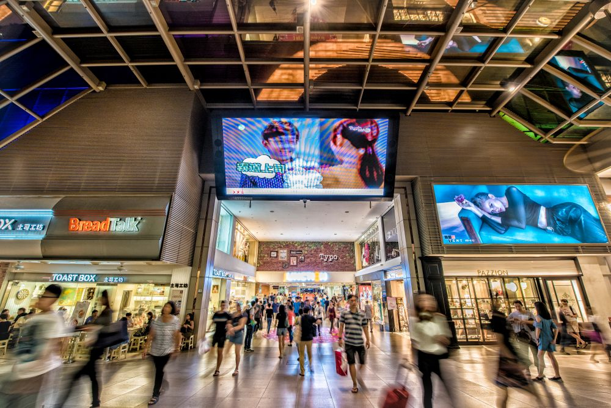
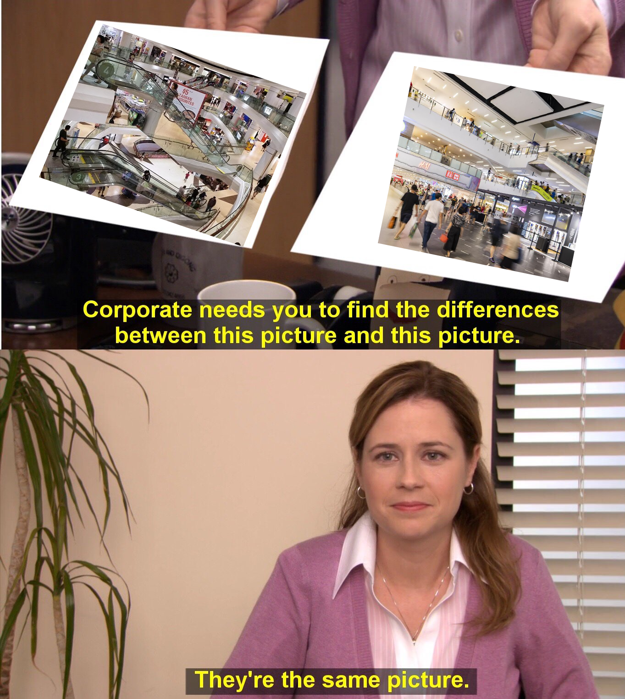

Bored of the malls in Singapore? Try going downtown
Bet you $5 you haven't heard of "Nick Vina Artisan Bakery".
Much has been written about the "American Shopping Mall", some even comparing it to a temple for capitalism in America.
Similar things could be said about the role of the shopping mall in Singapore.
A lot of Singapore life and core experiences centre around the Singapore mall. From a young age, many kids have to pass through a mall before they head home from school, effectively making it a de facto hangout spot.
As adults, we don't really grow out of this. In fact, the need for malls in Singapore expands as much of our life — whether they be hobbies or necessities — can be found in the air-conditioned Singaporean shopping mall.
But over the past few years, something has become more and more apparent: many malls in Singapore just feel the same.
About 8 months ago, my ex-colleague and I set out to find out why.
You can see what we found out here:
But I knew even then, we were just scratching the surface. For the video, my colleague manually compiled the list of shops in 44 malls.
I've always wanted to revisit the project to expand it.
So now, newly armed with coding and data analysis skills (and prompt of "Something you miss from home" with a deadline of two weeks), I set out to dive even further down the rabbit hole.
Here's what I found:
This was surprising! It contradicts with the glitzy image of downtown Singapore we are familiar with now.
But historically, it might make sense. One speculation could be that Singapore developed outwards from the city center. More of the malls in central Singapore might simply have been built earlier.
But why haven't these malls been renovated yet?
This is something I intend to explore in the future.
Here are some other questions that came up from the dataset: Why do we have so many LACs in Singapore??
| Frequency | |
|---|---|
| WATSONS | 47 |
| GUARDIAN | 44 |
| STARBUCKS | 37 |
| YA KUN KAYA TOAST | 34 |
| 7-ELEVEN | 34 |
| LAC | 34 |
| LIHO TEA | 34 |
| SUBWAY | 32 |
| OLD CHANG KEE | 32 |
| CHALLENGER | 32 |
For context, LAC is a brand that sells supplements. Why has LAC been proliferating around Singapore? Are that many Singaporeans buying supplements?
To end off, here are the 10 most generic, and 10 most unique malls in Singapore (from the dataset).
I hope to eventually expand the dataset to all the malls in Singapore — at least according to this Wikipedia page.
You can track my progress here.